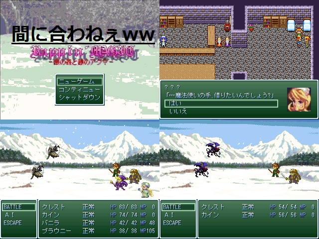

作品紹介
| ≪ Back | トップページ | 作品一覧 | Next ≫ |
| No078. - 続・Rappin'MAGIC-銀の森と銀のアクマ- |

| 使用ツール：2000 |
| 作者：ラッシュ |
| ジャンル：やるゲー |
| 動画・配信：だれかやってください。 |
|
あのツクール４のサンプルゲームのオマージュ 悪くいえば丸パクリに近いモノ。 2000デフォ戦でのサイドビューは必見。 騙されたつもりで遊んでやってください。 いや、完全に騙すつもりなんだがねww |
| 管理人コメント：Parallel、クレアンティクス、CELLMETAL SUPERNOVA(2000)…憧れたものだ |
| ダウンロード(0.2MB) ① ② / 感想掲示板 ツイート |
更新情報・お知らせ
- 2012/01/02
- 遅刻提出
- 2011/12/23
- エントリー